<!DOCTYPE html>

<html>
  <head>
    <title>William Guiracoche</title>

    <meta name="viewport" content="width=device-width, initial-scale=1.0">
    <!--Favicon-->
    <link rel="icon" type="../image/png" href="../img/favicon.png">
    <!--CSS Links-->
    <link rel="stylesheet" href="../css/navbar.css">
    <link rel="stylesheet" href="../css/bootstrap.min.css">
    <link rel="stylesheet" href="../css/styles.css">
    <!--Scripts-->
    <script type="text/javascript" src="../js/analytics.js"></script>
    <script type="text/javascript" src="../js/jquery-2.1.3.min.js"> </script>
    <script type="text/javascript" src="../js/portfolio.js"></script>

    <style>
    .giffy {
      display: none;
    }
      @media screen and (max-device-width: 800px) {
        .webby {
          display: none;
        }
        .giffy {
          display: inline;
        }
      }
      table, th, td {
      border: 1px solid black;
      border-collapse: collapse;
      background-color: #ffd5ad;"
      }
      th, td {
          padding: 5px;
          text-align: left;
      } 
          
      .wrapper {
        padding: 0px 10% 0px 10%;
      }
      .videoWrapper {
        position: relative;
        padding-bottom: 56.25%; /* 16:9 */
        padding-top: 25px;
        height: 0;
      }
      .videoWrapper iframe {
        position: absolute;
        top: 0;
        left: 0;
        width: 100%;
        height: 100%;
      }
    </style>
  </head>
  <body style="background-color:#FFA54C;">
    <!--Navbar begins-->
     <div class="navbar2 hidden-xs">
      <div align="center">
        <ul>
          <a href="../index.html"><li>Home</li></a>
          <a href="index.html"><li>Portfolio</li></a>
          <a href="../about_me.html"><li>About Me</li></a>
          <a href="../img/resume.pdf"><li>Resume</li></a>
          <a href="../cs.html" id="spcl"><li>Contact</li></a>
        </ul>
      </div>
    </div>

    
    <div class="navbar navbar-inverse navbar-static-top visible-xs">
      <div class="container">
        <div class="navbar-header">
        <a href="#" class="navbar-brand">William Guiracoche</a>
        <button class="navbar-toggle" data-toggle="collapse" data-target=".navHeaderCollapse">
          <span class="icon-bar"></span>
          <span class="icon-bar"></span>
          <span class="icon-bar"></span>
        </button></div>
        <div class="collapse navbar-collapse navHeaderCollapse">
          <ul class="nav navbar-nav navbar-left">
            <li><a href="../index.html">Home</a></li>
            <li><a href="index.html">Portfolio</a></li>
            <li class="dropdown">
            <li><a href="../about_me.html">The Author</a></li>
            <li><a href="../cs.html">Contact</a></li>
          </ul>
        </div>
      </div>
    </div>
    <!--Navbar ends-->

    <div class="container">
      <div class="row">
        <div class="col-lg-1"></div>
        <div class="col-lg-10">
          <div class="panel panel-default">
            <div class="panel-body">
              <div class="page-header">
                <center>
                  <h2> Designing a Controller and Control<br> System for a Small Submarine</h2>
                </center>
              </div>
              
              <center>

                <div class="wrapper">
                  <div class="videoWrapper">
                    <iframe src="https://www.youtube.com/embed/BqobtLHTeZs" frameborder="0" allowfullscreen></iframe>
                  </div>
                </div>

                <br>
                <i>Our first attempt at controlling the submarine in the water.</i>
              </center>

              <h2> Overview </h2>
              <p class="fontsize">
                In my Engineering Design (MAE 321) course, the final project was to build a small submarine with a $1000 budget to meet certain specs and go through an obstacle course. Final Report Abstract:
              </p>
              <blockquote>
                 <i>"Unmanned underwater vehicles (UUVs) are critical to furthering humanity’s interests in fields from the military to oceanography. The purpose of this final project was to design, manufacture, and test a size-limited UUV to accomplish certain performance-based metrics. Throughout the Preliminary and Critical Design Reviews, Team Blue [our team name] held to its original mantras of reliability, simplicity, and accessibility. A design reliant on PVC pipes to house electronics, foam to accomplish neutral buoyancy, and four fixed motors was presented in the Preliminary and Critical Design Reviews. During testing day, the vehicle proved operational underwater for approximately 25 minutes, although there were difficulties in controls and buoyancy. This report summarizes the design and testing processes that led up to the final product, and analyzes the shortcomings of the final test."</i>
              </blockquote>
              <p class="fontsize">
                The team consisted of 11 students and we broke down to down into buoyancy, propulsion, and frame sub teams. In summary, <b><i>buoyancy</i></b> focused on addressing weight distribution of the vehicle such that it remains stable and upright when in the water, <b><i>propulsion</i></b> addressed the application of motors and controls of the device, and <b><i>frame</i></b> accounted for the form, assimilation, and structural integrity of the vehicle. Naturally, I chose to be on the propulsion team which is why I will focus on the motors, electronics, and controls when summarizing the project.
                <br><br>
                My personal contributions included (but were not limited to):
                </p>
                <uo class="fontsize">
                  <li>Planning out the controller layout</li>
                  <li>Heavily working on and debugging the code</li>
                  <li>Working with propulsion team to debug and test the circuit</li>
                  <li>Lots of Soldering</li>
                  <li>Making connections on the submarine</li>
                  <li>Making wires that went onto the power distribution board</li>
                  <li>Controlling the submarine on test day</li>
                </uo>
                <br><br>
                <p class="fontsize">
                  My team was successful in programming building an Arduino controller from discrete components to control the propellers on the submarine. Unfortunately, during the final test day the motor controller overheated, the wires melted and created a short which fried the motor controller and battery due to the tight packing in the submarine. 

                These were the requirements for the submarine to succeed:
              </p>
                
              <center>
              <table class="fontsize">
                <col width="40%">
                <col width="40%">
                <tr>
                  <th><b>Requirement</b></th>
                  <th><b>Details</b></th> 
                </tr>
                <tr>
                  <td>Maneuverability</td>
                  <td>Horizontal Speed: 1 m/s<br>Vertical Speed: 0.5 m/s<br>Rotation Speed: 0.66 rev/s<br>Maintain low speed</td> 
                </tr>
                <tr>
                  <td>Max Size</td>
                  <td>Volume: 10 L<br>Dimension 40 cm</td> 
                </tr>
                <tr>
                  <td>Operation</td>
                  <td>At depth of 3m<br>For time of 30 min<br>Power on board</td> 
                </tr>
                <tr>
                  <td>Stability</td>
                  <td>Minimal pitch and roll while moving</td> 
                </tr>
                <tr>
                  <td>Budget</td>
                  <td>$1000</td> 
                </tr>
              </table>
              <i></i>
              </center>

              <br>
              </p>

              <h2>Submarine Design Process</h2>
              <p class="fontsize">
              Before we split off into sub teams, we first had to decide what we wanted our submarine to look like. We wanted the vehicle to be easy to control, to meet the requirements, to be stable and not to be too expensive. At first, the aerospace engineers inside of us wanted to have four motors in the center because a submarine is basically just an underwater quadcopter right? Yeah, not exactly. We realized immediately that this would be too expensive and complicated.
              <center>
                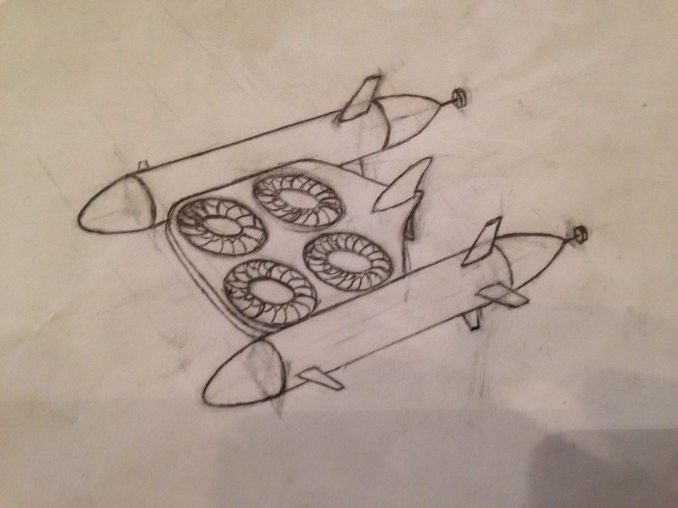
                <br>
                <i width=80%>One of our first ideas for the submarine.<br>(Sketched by Kirk Robinson)</i>
              </center>
              <br><br>
              <p class="fontsize">
                We then decided to have two propellers in the center for vertical thrust and two propellers in the rear for horizontal thrust. This idea was much simpler and less expensive.
              </p>
              <center>
                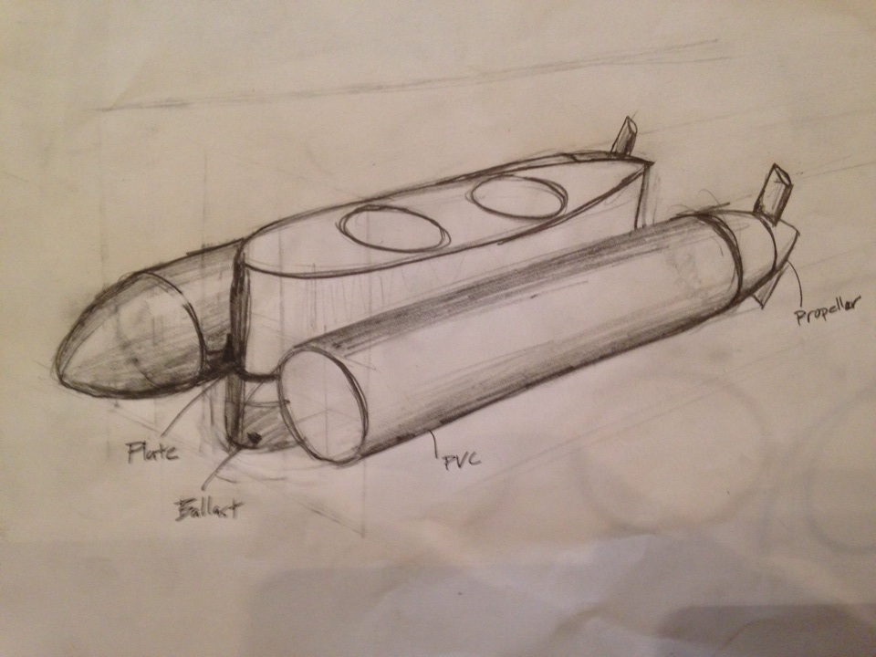
                <br>
                <i width=80%>A later sketch after we decided the basic propulsion mechanisms.<br>(Sketched by Kirk Robinson)</i>
              </center>
              <br><br>
              <p class="fontsize">
              Once we figured out where our motors would be placed, we needed to think about buoyancy. We could not have the vertical propellers be the only upward force because that would require too much power and make pitch difficult to control. To maintain neutral buoyancy, foamular 150 foam was added to the submarine design because it was durable, easily machinable, could hold a rigid form, and was affordable which was a major consideration given our budget limitation.
              </p>
              <center>
                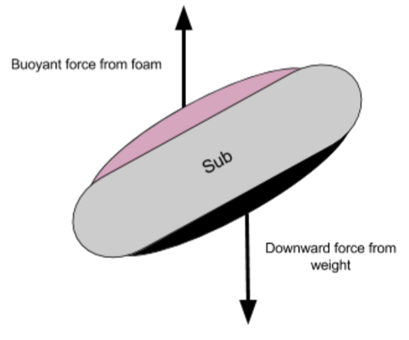
                <br>
                <i width=80%>The buoyant force pulls up while weight pulls down creating a moment that reorients the vehicle.</i>
                <br><br>
                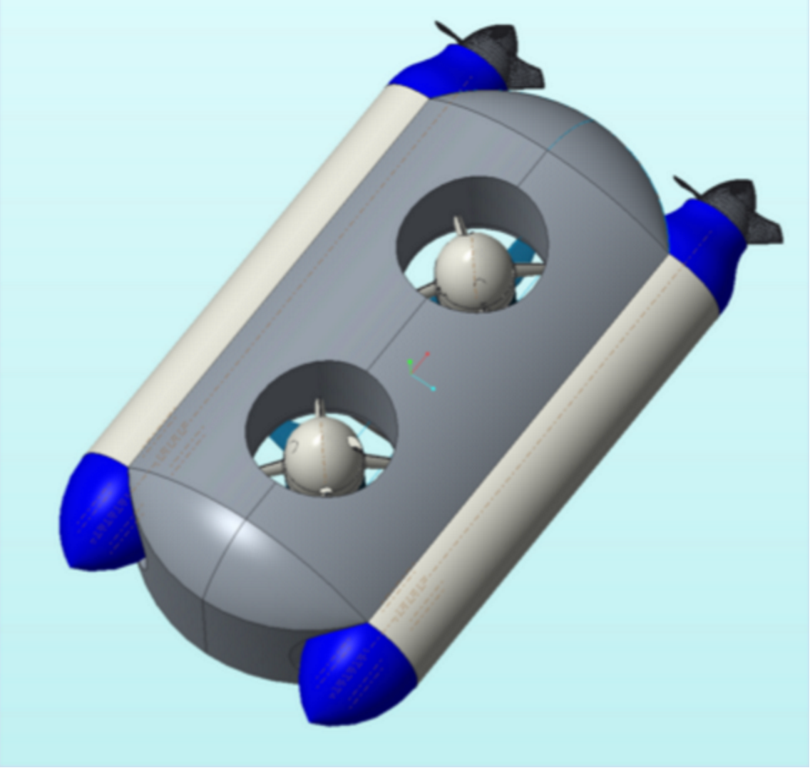
                <br>
                <i width=80%>CAD of the basic final design.</i>
              </center>
              <p class="fontsize">
              At this point, we split off into sub teams to work on our project. Once our basic final design was solved, the buoyancy and frame teams tweaked the final shape of the submarine to make it neutrally buoyant, hydrodynamic and less expensive.
              </p>
              <center>
                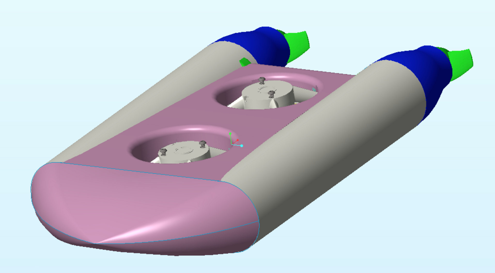
                <br>
                <i width=80%>CAD of our final design.</i>
              </center>


              <h2>Propulsion</h2>
              <p class = "fontsize"> 
                The first challenge the propulsion team faced was finding the appropriate electronics necessary fit in the small space allowed and give the vehicle sufficient power. We needed to find motors that fit the requiired thrust. However, creativity was also important in finding the means to power and control these motors. This was the balance in question when decisions were made about the electronic components of the vehicle. The propulsion team was also tasked with creating an elegant way to control the vehicle as well as arranging all of these electronics within the waterproof body. For the final vehicle design, we decided that we needed 4 motors, 4 electronic speed controllers (ESCs), 2 batteries and a controller system.
                <br>
                <br>
              </p>

              <center>
                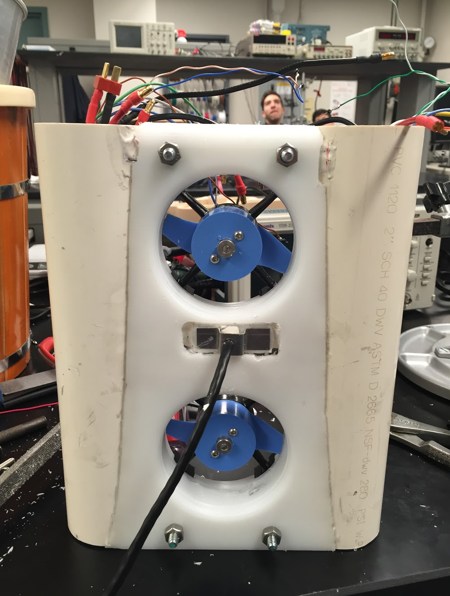
                <br>
                <i width=80%>There was a small amount of space to fit our control system.</i>
              </center>


              <h4><b>Motors</b></h4>
              <p class = "fontsize"> 
                We used Blue Robotics M100 motors for the read horizontal propulsion system because they are waterproof (they are brushless), designed for underwater use, will not rust which allows for a longer lifespan of the vehicle and rely on bearings which are ungreased and uses water for lubrication (for more specs on the motor, you can visit the website <a href="http://docs.bluerobotics.com/thrusters/motors/#specification-table">here</a>.)
                Blue Robotics T100 Thrusters (same as M100 motors but mounted on a cowling) were chosen for the vertical motor system. 
                <br><br>
              </p>

              <h4><b>Electronic Speed Controllers (ESCs) </b></h4>
              <p class = "fontsize">
              In order to safely operate and control the selected motors, electronic speed controllers (ESCs) were necessary. The ESCs take in a PWM value and translate that into a three phase signal for the motor. Thus, the three motor wires are powered in a certain order and for a certain amount of time such that the net current through the motor is that needed to produce the desired thrust. We chose the Blue Robotics Basic ESC (more info on the ESC <a href="https://www.bluerobotics.com/store/thrusters/besc30-r2/">here</a>) to pair with each of the motors. The motor manufacturer's recommendation and the high current rating were the main reasons this driver was selected. Calculations showed that the highest current that would ever be required was 6 amps, thus the unit would be much less likely to overheat and damage any of the other components in the pontoons of the vehicle. These ESCs also came preprogrammed with forward and reverse functions so that the motors could be run both ways.
              <br><br>
              </p>

              <h4><b>Batteries </b></h4>
              <p class="fontsize">Two lithium polymer batteries, each with a 4000mAh capacity, 11.1V 3S setup, and 20C current rating were chosen. After calculating the power needs, it was determined that these batteries would provide around 30 minutes of runtime at maximum speed and around 70 minutes of runtime at the minimum required speed. Lithium Polymer batteries because they are inexpensive when compared to other battery types of similar capacity and are the standard in remote control vehicles. They are also more compact meaning they have a high power density.
              <br>
              </p>

              <h2>On-Board Arrangement</h2>
              <br><br>
              <p>
              <center>
                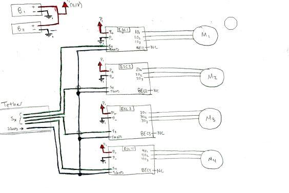
                <br>
                <i width=80%>Circuit diagram for electronics contained within the vehicle (Sketched by Daniel Echeverri).</i>
                <br><br>
                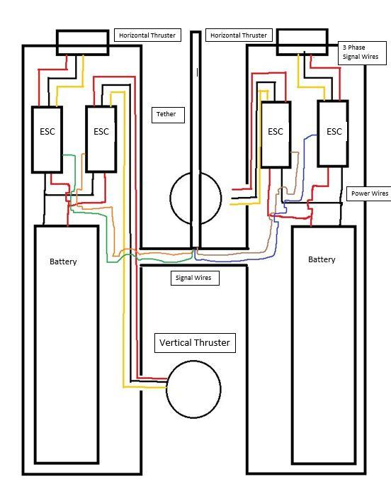
                <br>
                <i width=80%>Wiring diagram for electronics contained within the vehicle.</i>
              </center>
              <br>
              </p>
              <h2>Controller and Control System</h2>
              <p class="fontsize">
                  The control system for the submarine was very much designed with the user in mind. When designing the user interface, the goal was to keep it simple and intuitive yet comprehensive so that the user could make the vehicle do anything that was needed without getting bogged down by the controls. Existing, pre manufactured controllers were considered but this would mean having to work with code found online to interpret the serial signals output by the controller and translate them to something the ESCs could understand. Thus, it was decided that a controller would be designed specically for the vehicle. Creating a new controller also allowed for a top down approach to the build.
                  <br><br>
              </p>

              <center>
                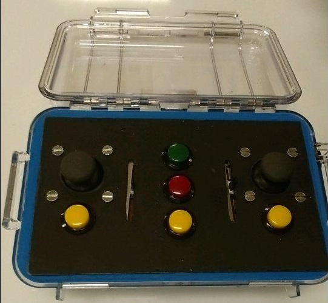
                <br>
                <i width=80%>This image was taken from above the controller.</i>
              </center>
              <br><br>
              <p class="fontsize">
                Each of the controls joysticks, buttons, and sliders is a passive device that outputs a direct digital or analog signal that can be read by the appropriate pins on the microcontroller. This means the user can easily add or remove a control to change the functionality or could simply change the code to adjust it without having to go through lines of text in complicated online code.
                <br><br>
                The Arduino Uno R3 was chosen since it is very cheap but has more than enough digital and analog pins for this vehicles purposes. We also decided that the Arduino should be in the controller rather than the sub because it would be easier to remove and would not require power from the batteries in the submarine. The Uno also runs on a USB cable and has an internal five volt regulator to power the pins meaning it is compatible with the five volt logic of the ESCs. 
                </p>
              <center>
                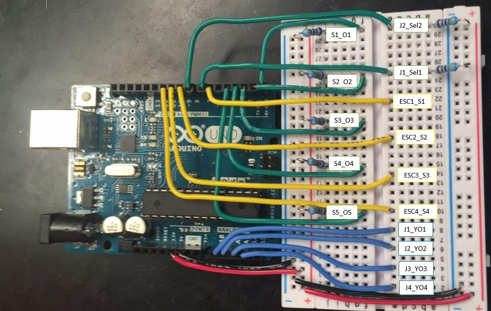
                <br>
                <i width=80%>Image explaining how our Arduino connects with the rest of the system.</i>
                <br><br>
                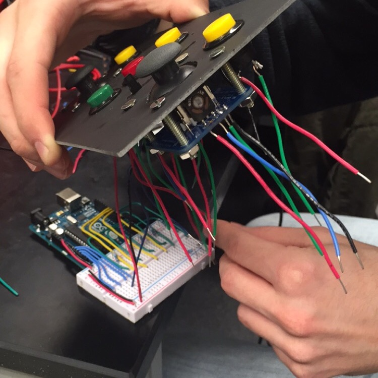
                <br>
                <i width=80%>Connecting the Arduino to the controller.</i>
              </center>
              <br>
              <p class="fontsize">
                The Uno can be programmed using Arduino IDE which is very similar to C and has preset functions for PWM and I2C. The I2C is useful since an LCD screen was temporarily considered for user feedback on the controller and the I2C communication protocol would only require two pins for interfacing. This screen would have provided information about the state of the motors and how fast the user was running each one but was not included due to time constraints and to leave the two I2C pins available for any sensors the user may want to add. If the Uno were upgraded to a larger model, such as the Mega 2560, the screen could be considered again since there would be 54 digital pins to work with.
                <br>
              </p>
              <h2>Code and Controller Functions</h2>
              <p class = "fontsize">
                The code's main objective was to control the horizontal and vertical motors the vertical motors. The analog output from each joystick managed each rear horizontal motor separately. Since the Arduino reads a value from 0-1023 in its analog pins and has to output a pulse width modulated (PWM) signal between 1270 and 1730, a mapping function was used that allowed for the conversion of the signal input to an output of the proper range. The values 1270 and 1730 were chosen because they corresponded with the maximum value that would draw a current value such that the batteries would not be drained in less than 30 minutes.
              </p>
              <br>
              <center>
                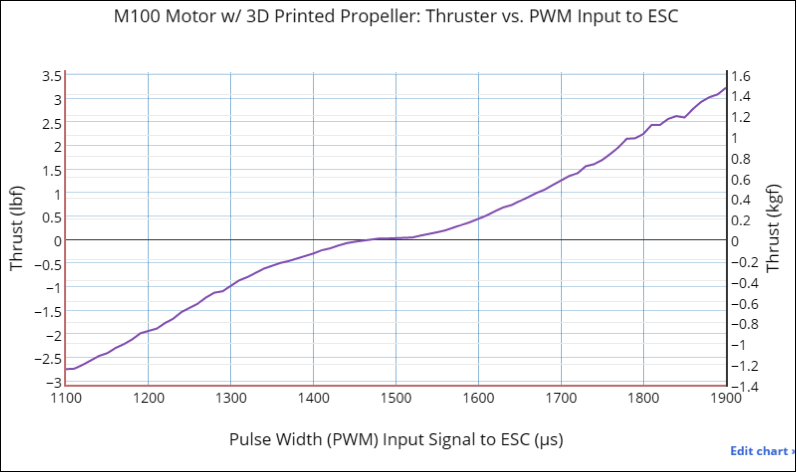
                  <br>
                  <i width=80%>Chart from the manufacturer that allowed us to know which PWMs to use. More performance charts can be viewed on <a href="http://docs.bluerobotics.com/thrusters/motors/#performance-charts">their website</a>.</i>
              </center>
              <br>
              <p class = "fontsize">
                Like the horizontal motors, the vertical motors were fed PWM signals between a 1270 microsecond pulse and a 1730 microseconds pulse. The code divides this range into 20 even steps of 23 microseconds. When the top button was pressed, the vertical motors would increase in PWM by one step and when the bottom button was pressed, the vertical motors would decrease in PWM by one step. The center button would immediately send a PWM of 1500 to both motors and stop them completely. 
                <br><br>
                The vertical motors were also controlled by the sliders. The slider on the left controlled the front vertical motor and the slider on the right controlled the back vertical motor. When the sliders were in their center positions, the code was set to run as if the sliders weren't there but when one of the sliders is moved, the PWM of its corresponding motor changed accordingly. This allows for the user to control each vertical motor separately. For example, if both motors were to run at a PWM of 1592 and the user increased the right slider by a small amount then the user could have the front motor running
                at 1592 PWM and the back motor running at 1650 PWM. This is especially useful for pitch control and to compensate for buoyancy errors.
                <br><Br>
                The controller was designed to have two additional buttons for clockwise and counterclockwise spins. These buttons allowed the user to turn one horizontal motor in one direction and the other in the opposite direction in such a manner that the submarine would turn on a dime in the desired direction. These would have been pre-calibrated so that the sub remained stationary beside the rotation.
              </p>

              <center>
                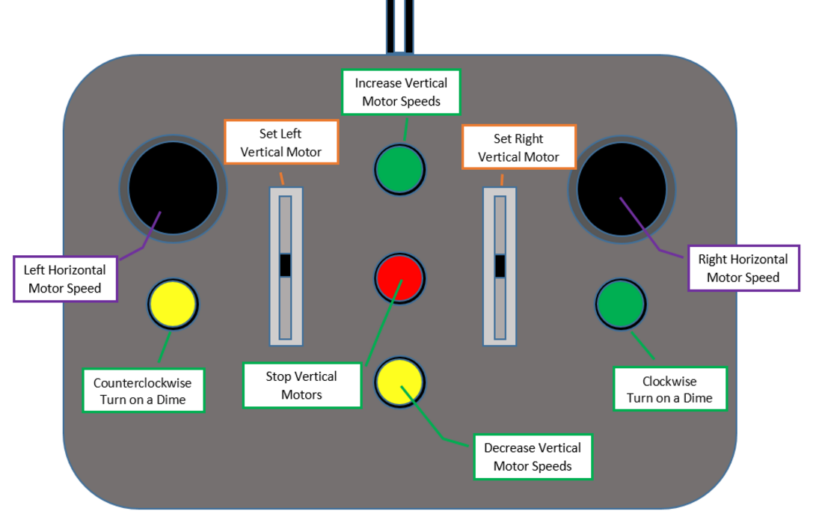
                <br>
                <i width=80%>
                  A visual summary of the functions in the code and the button layout to execute those functions.  
                </i>
              </center>
              <br><br>
              <center>
                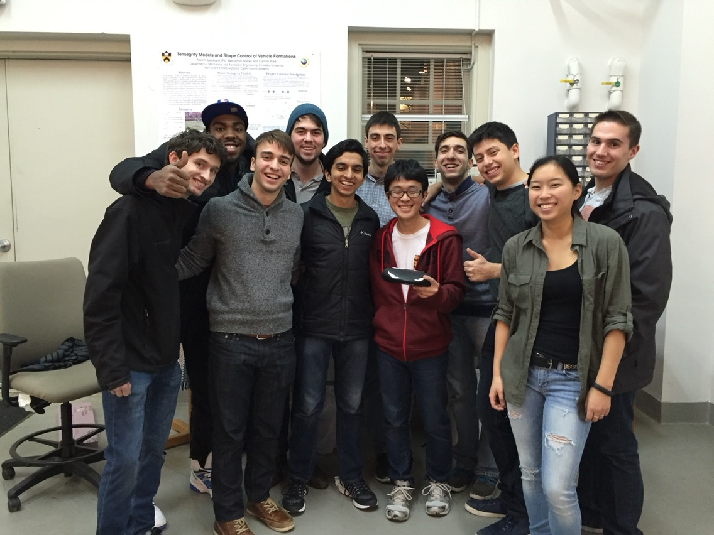
                <br>
                <i width=80%>
                  Team members: Kirk Robinson, Brannon Jones, Tal Bass, Isaac Ilivicky, Aarav Chavda, Josh Umansky, Emile Oshima, Dan Echeverri, Will Guiracoche (me), Leah Wallace, and Matt Daigger.  
                </i>
              </center>
            </div>
          </div>
        </div>
      </div>
    </div>  
      
    <script src="../js/bootstrap.js"></script>
  </body>
</html>